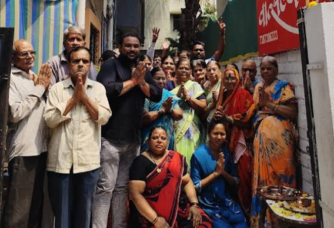

A New Chapter Begins
Vatsalya: Where Care Feels Like Home.
At Vatsalya Pariwar Foundation, we are committed to providing abandoned elders a safe home, heartfelt companionship, and the respect they truly deserve.
Together, we create a world where no one grows old alone.
Why Choose Us
2
Elder Care Homes
1,000+
Lives Touched
500+
Active Volunteers
15+
Years of Service
Restoring Dignity. Rebuilding Lives.
Vatsalya Pariwar Foundation has dedicated itself to providing abandoned elders a life of dignity, care, and belonging.
+
Years
+
Beneficiaries
+
Volunteers
Mr. Satish Sonar
Founder

Our Mission
To provide a safe, caring, and inclusive environment for abandoned and destitute elders, addressing not only their basic needs like shelter and healthcare but also nurturing their emotional well-being, restoring their dignity, and helping them rediscover the joy of life.
Our Vision
We envision a compassionate society where every elder lives with dignity, love, and respect. A world where no elder is left behind, and communities come together to care for their most vulnerable.
Our Values
Vatsalya Pariwar Foundation is guided by compassion, dignity, service, community, and integrity. We care for elders with empathy, honor their worth, serve selflessly, build a supportive family beyond blood, and act with honesty and responsibility.
Our Core Programs
Empowering abandoned elders with care, compassion, and dignity through dedicated, holistic support initiatives.
- All Facilities
- Care & Comfort
- Engagement & Outreach
- Daily Living & Nutrition

Shelter & Safe Living
Full Time
Residential Support
We offer long-term, loving homes to abandoned elders where they live safely, feel respected, and are embraced by a caring and supportive environment every day.
Learn More
Healthcare & Wellness
Daily Support
Preventive & Curative Care
Our elders receive regular medical checkups, timely treatments, and emotional support to live healthier, fuller lives with the dignity and respect they deserve..
Learn More
Nutrition & Daily Care
Year-Round
Balanced Meals & Hygiene Assistance
Every elder is served nutritious meals and provided with attentive hygiene support, helping them maintain good health and personal dignity in everyday life.
Learn MoreEmotional & Spiritual Wellbeing
Weekly Activities
Group Engagement & Faith Support
We promote peace and purpose through spiritual guidance, music, and group discussions that bring comfort, connection, and inner healing to each elder.
Learn More

Community Volunteering & Outreach
Open To All
Scheduled Drives & Events
Volunteers of all ages can share time, skills, and compassion—creating meaningful relationships that deeply impact the lives of elders and volunteers alike..
Learn MoreSkill Sharing & Elder Engagement
Flexible
Creative & Recreational Activities
Through art, storytelling, and simple activities, elders reconnect with their passions, feel valued, and continue to contribute actively within the community.
Learn MoreLife at Vatsalya
At Vatsalya Pariwar Foundation, life is more than shelter—it's a journey of rediscovering joy, community, and purpose. We cultivate a warm, inclusive environment where every elder feels heard, respected, and cherished. From shared meals to festive celebrations, every moment here becomes a memory of hope and healing.
Community Bonds
Seniors engage in group interactions, storytelling circles, and compassionate peer support that foster belonging and companionship.
Cultural Celebrations
From birthdays to traditional festivals, we honor every occasion with warmth and joy, restoring forgotten smiles.
Creative & Theraputic Activities
Art, music, and wellness programs rejuvenate the mind and body, allowing elders to express themselves freely and stay active.
Connection Beyond Walls
We regularly host volunteer visits, intergenerational exchange programs, and outings to ensure our elders stay connected with the world around them.
Testimonials
Voices from the Heart of Vatsalya
Living at Vatsalya Pariwar has brought peace and comfort back into my life. For the first time in years, I feel safe, heard, and cared for like family.
Savitabai Deshmukh
Resident ElderSupporting Vatsalya’s work has been deeply rewarding. Knowing that my small contribution helps abandoned elders find love and dignity gives me real purpose.
Rajiv Patil
Monthly DonorAs a volunteer, I’ve seen how Vatsalya creates not just shelter, but a true home filled with affection, respect, and a sense of belonging.
Meenal Joshi
VolunteerThe team at Vatsalya has become my extended family. Their compassion and support gave me the strength to start living again.
Keshav Rao
Resident ElderI feel proud to associate with an organization that uplifts forgotten elders and reminds us of our shared responsibility to care for our seniors.
Dr. Anjali More
Philanthropist & SupporterVatsalya Pariwar isn’t just a foundation—it’s a movement. A place where love is unconditional, and every elder is valued beyond words.
Sneha Kulkarni
Event CoordinatorA Legacy of Compassion and Care for Over 25 Years
For more than two decades, Vatsalya Pariwar Foundation has been a sanctuary for abandoned elders—providing not just shelter, but love, dignity, and emotional support. We are dedicated to creating a world where every elder feels safe, valued, and at home.
With compassion as our foundation and community at our heart, we continue to touch lives, one elder at a time.
+
Elders Rehabilitated
:5
Caregiver-to-Elder Ratio
Residential Homes
₹L
Donations Mobilized
Stories of Dignity, Hope & Healing
At Vatsalya Pariwar Foundation, each day unfolds a new chapter—woven with compassion, courage, and the quiet strength of our elders. Through heartfelt care and shared humanity, we witness the beauty of second chances.
"I thought I was forgotten—until Vatsalya found me."
.png)

Moments That Matter
Every gathering at Vatsalya Foundation Pariwar is more than just an event — it’s a bridge between generations, a celebration of life, and a reaffirmation of dignity for our elders. Our calendar is filled with heartfelt initiatives that bring joy, community, and purpose.
July
15
2025
Memories
Saanjh Ki Yaadein – Monthly Reminiscence Evenings
A soulful evening where residents relive old memories through music, storytelling, and shared nostalgia.
August
10
2025
Birthday
Birthday & Festival Celebrations
No one grows old alone here. Each birthday and festival is celebrated with love, lights, laughter — and cake!
August
22
2025
Volunteers
Volunteer Saturdays – Serve with Your Heart
Open days for individuals and families to spend quality time with our elders through art, games, and conversations.
September
8
2025
Outings
Outreach Drives – Compassion in Action
Whether it's warm blankets in winter or health checkups, our outreach initiatives extend care beyond our walls.